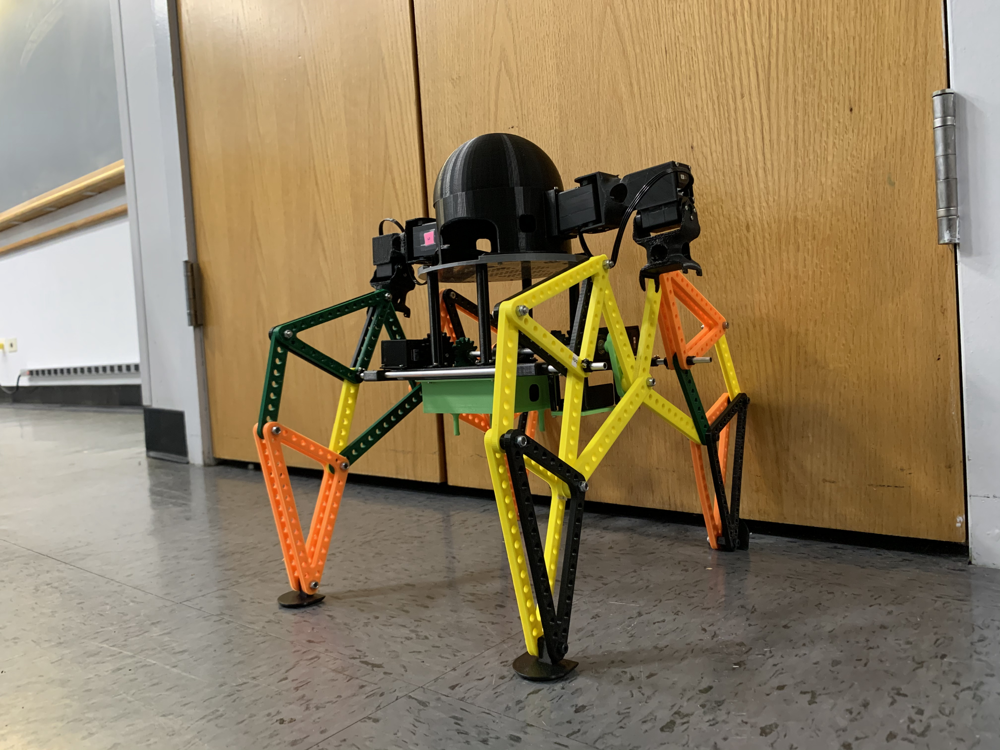

Michael Jansen: The Dancing Robot
A humanoid dancing robot inspired by Boston Dynamics, featuring advanced motion control and the innovative Jansen walking mechanism.

Project Gallery
Visual documentation of Michael Jansen's design and development process
Project Details
Timeline
Fall 2022 Semester
Category
Robotics & Mechanical Design
Technologies
Tags
Project Overview
As part of my first semester at Columbia University, our team designed and built Michael Jansen, a dancing robot inspired by Boston Dynamics' viral dancing robot videos. This project combined mechanical design, control systems, and creative engineering to create a robot capable of performing coordinated dance movements.
Design Process
The project began with extensive research and brainstorming sessions where we sketched various design concepts. We ultimately decided to base our robot on the Jansen walking mechanism, which provided an excellent balance between stability and mechanical simplicity. This choice allowed us to achieve complex walking motions with minimal actuators, freeing up motors for arm movements and dancing gestures.
3D Design and Manufacturing
Using SolidWorks, we created detailed 3D models of all robot components, ensuring proper fit and function before manufacturing. The design was optimized for 3D printing, taking advantage of Columbia University's maker space facilities. Each component was carefully designed with considerations for weight distribution, joint articulation, and servo motor integration.
Key Innovation: Jansen Mechanism
The Jansen mechanism, invented by Dutch artist Theo Jansen, creates a smooth walking motion using a single rotational input. This biomimetic approach allowed our robot to achieve natural-looking locomotion while maintaining mechanical simplicity and reliability.
Control System
The robot's brain consists of a Raspberry Pi that interfaces with multiple servo motors through a custom control board. We developed a Python-based control system that coordinates leg movements with arm gestures to create fluid dancing motions. The programming involved:
- Servo motor calibration and timing synchronization
- Motion sequence programming for different dance moves
- Sensor integration for balance and orientation feedback
- Real-time motor control with smooth transitions
Results and Performance
Michael Jansen successfully demonstrated a variety of dance moves, including coordinated arm and leg movements that created an engaging performance. The robot's unique locomotion style, combined with expressive arm gestures, resulted in a charming and entertaining dancing companion.
Watch the final performance: https://youtu.be/erLCOFPFAjo